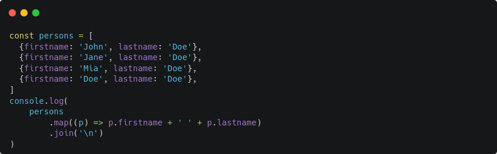
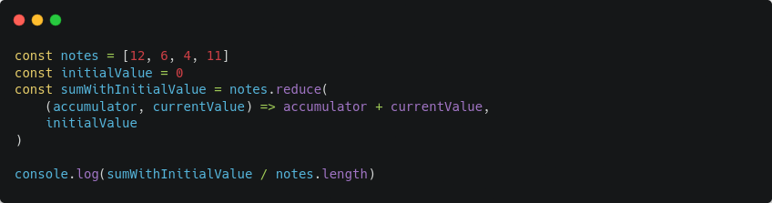

Accepte des index négatif.
Fusionne deux tableaux
Rempli un tableau avec une valeur spécifique
Filtre les valeurs en une seule fois. Elle prend un paramètre : une fonction (true ou false). Elle permet de créer un nouveau tableau de valeur. Cette fonction de comparaison peut être plus ou moins complexe suivant les situtations.
Retourne l'index d'un tableau
Retourne le dernier index d'un tableau
Converti un tableau qui contient d'autres tableaux en un tableau aplatit. Utilisation spécifique.
Permet de parcourir un tableau. Reçoit à la fois la valeur et l'index.
Permet de créer un tableau à partir d'un élément. Similaire à MAP
Permet de vérifier si une valeur est inclue dans un tableau.
Renvoie l'index. Antérieur à INCLUDES
Associe différents éléments.
Transforme un tableau avec application d'une fonction de transformation (multiplie chaque élément d'un tableau par un nombre déterminé).
Retire le dernier élément d'un tableau. Affecte le tableau original.
Ajoute un élément dans uin tableau.
Permet de faire la somme des éléments d'un tableau.
Permet récupérer une partie du tableau et renvoie les éléments restant. Une valeur négative commence par la droite. En créant une slice() on crée un nouveau tableau.
Insère des données au début du tableau.
Permet d'assigner des propriété d'un objet à un autre objet. Cela crée un nouvel objet.
Permet de geler un objet pour ne plus le modifier.
Retourne un tableau de toutes les clés
Retourne un tableau de toutes les valeurs
Permet de créer une nouvelle fonction à partir d'une fonction en changeant le contexte de this. Cela permet d'ancrer la valeur et ainsi elle ne sera plus modifiable.
Appelle une méthode en lui passant la valeur de this et un tableau qui correspond aux différents éléments.
Fait la même chose que APPLY() mais permet de mettre les arguments les uns derrières les autres.